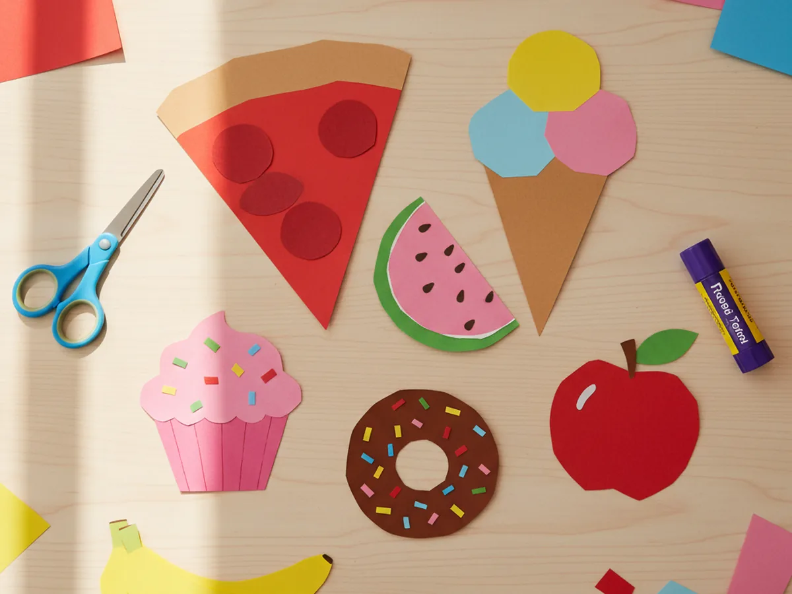
There is something truly magical about turning a stack of colored paper into a tiny pretend kitchen full of pizza slices, cupcakes, and ice cream cones. These food crafts with paper are simple, low-mess, and end with a whole pile of cute little play foods your child can use for hours of imaginative play afterward. 🍕
This roundup gathers 20 of the easiest food crafts with paper we love making with kids of all ages. Some come together in 15 minutes, others take a little longer, but every single one is beginner-friendly and uses supplies you probably already have at home. Pick one or pick five, and turn your kitchen table into a tiny paper bakery.
What You'll Need
These broad supplies cover almost every paper food craft on the list, so you only need to gather them once.
- Crayola Construction Paper, a 240-sheet assorted pack covers every food color you could need.
- Astrobrights Cardstock, sturdier than regular paper for foods that need to stand up or stack.
- Elmer's Washable School Glue, safe for kids and easy to clean up from surfaces and clothes.
- Fiskars Training Scissors for Kids, easy-grip and safe for little hands ages 3 and up.
- Crayola Broad Line Markers, perfect for adding texture, seeds, sprinkles, and other food details.
- Self-Adhesive Googly Eyes, optional but lovely for turning a few foods into smiley pretend friends.
- A pencil, useful for tracing simple food shapes before cutting.
- Scrap paper or old magazine pages, great for adding bonus textures and patterns.
20 Easy Food Crafts with Paper to Make with Your Kids
1. Paper Pizza Slice
Cut a large triangle from yellow or tan cardstock for the slice base, then add a curved red paper edge for the sauce and a smaller cream-colored layer for the cheese. Top it with little circles of pepperoni cut from red paper, tiny green pepper squares, and brown mushroom shapes. Pizza is one of those classic food crafts with paper that almost every child wants to make first, and the toppings are easy to mix and match for hours of pretend ordering.
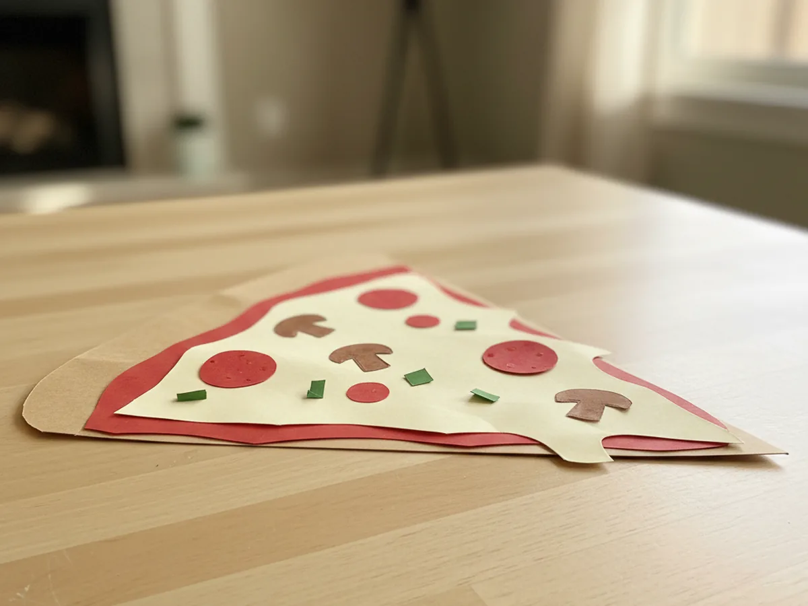
2. Paper Ice Cream Cone
Cut a brown paper triangle for the cone and draw a simple crosshatch pattern with marker to mimic the waffle texture. Layer two or three big paper scoops on top in pink, mint, and chocolate brown, and finish with a tiny red paper cherry. Kids adore stacking the scoops as tall as they can. This paper food craft looks especially adorable lined up in a row on the windowsill for a pretend ice cream parlor.
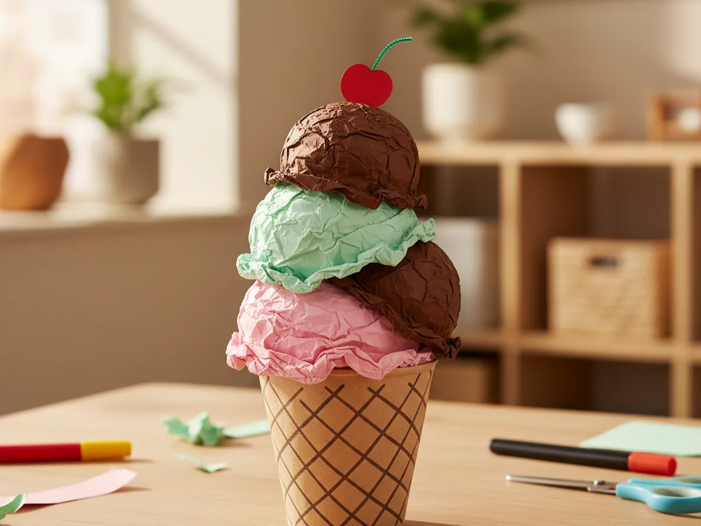
3. Paper Cupcake
Cut a striped paper cupcake liner from brown or pink paper, then layer a fluffy frosting swirl on top using a soft pastel color. Sprinkle on tiny paper squares of confetti or use markers to dot rainbow sprinkles across the frosting. Add a small red paper cherry on top for the classic bakery look. This is one of the sweetest food crafts with paper for a birthday-themed crafting afternoon. 🧁
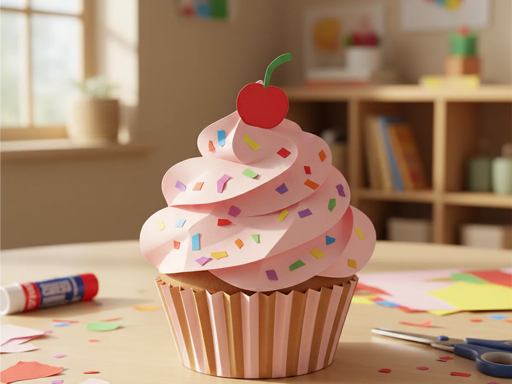
4. Paper Hamburger
Cut two round bun shapes from tan paper and layer in a brown paper patty, a green ruffled lettuce shape, a red tomato circle, and a yellow square of cheese with the corners poking out. Add a few tiny seed dots on the top bun with a marker for the classic sesame look. Among layered paper food crafts, this one teaches kids how stacking shapes can build a believable little meal. Great for a pretend diner setup at home.
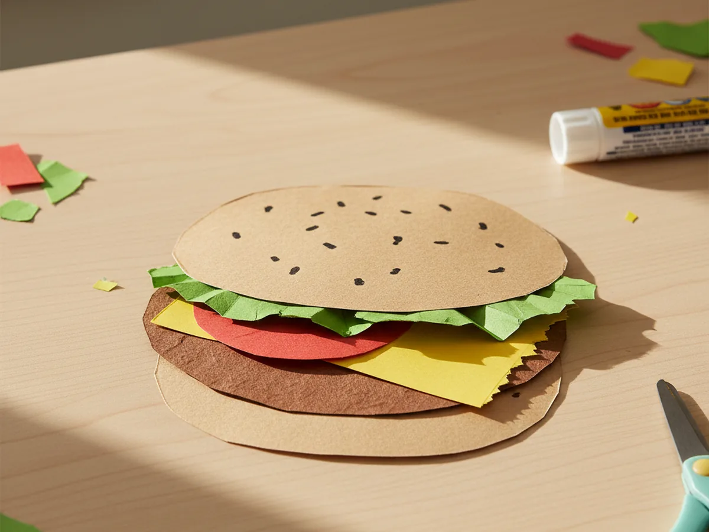
5. Paper Sushi Roll
Roll a small strip of black paper into a short tube for the seaweed wrapper and stuff it loosely with a white paper rectangle for the rice. Add tiny strips of orange or green paper inside to look like salmon or avocado. Make several pieces and arrange them on a small paper plate for a pretend sushi tray. This paper food craft is a fun one for older kids who enjoy a slightly more detailed mini project.
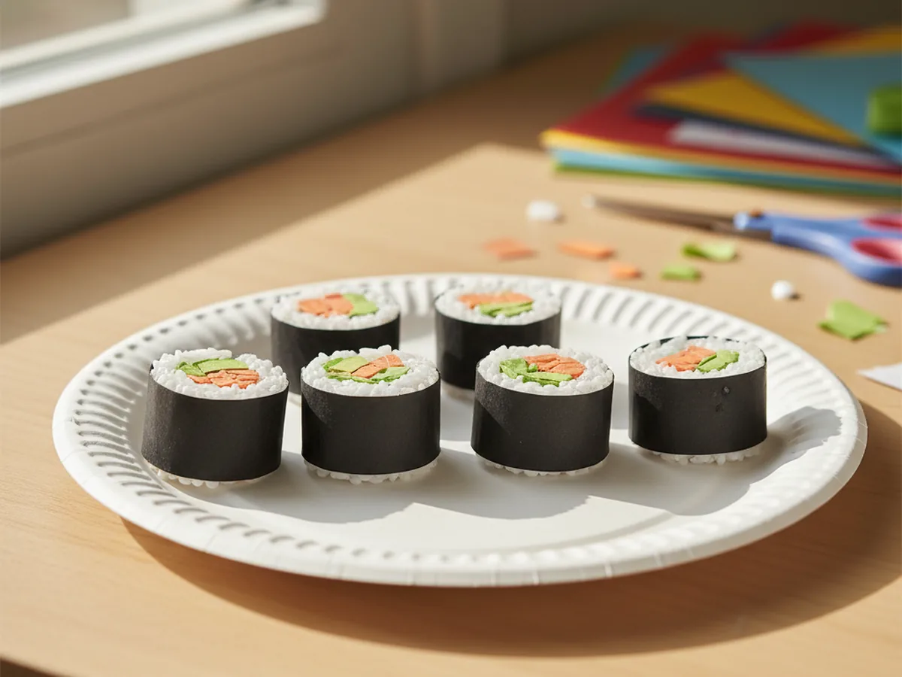
6. Paper Apple
Cut a round red or green apple shape from cardstock, then add a small brown paper stem at the top and a single green leaf on the side. Use a marker or a pale pink crayon to add a soft cheek shading on one side for a more realistic look. Apples are wonderful first food crafts with paper for younger toddlers because the shape is forgiving and the result always looks adorable. Display a basket of them on the kitchen counter for a cheerful seasonal touch.
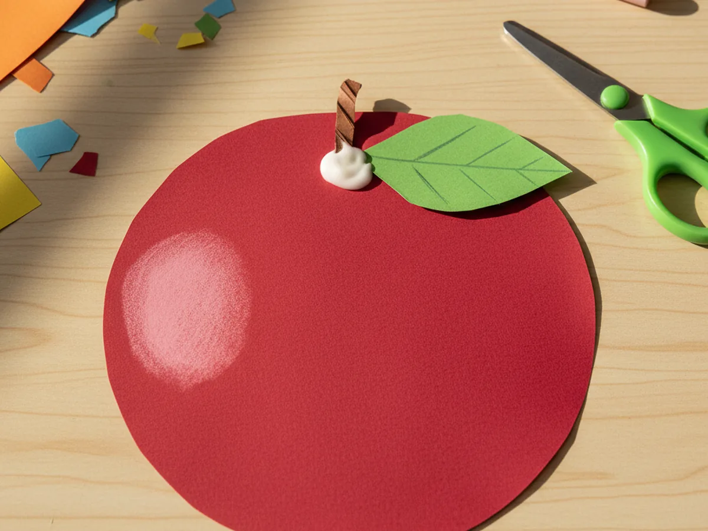
7. Paper Donut
Cut a large round donut shape with a hole in the middle from tan paper, then add a glossy frosting layer in pink, chocolate, or pastel blue on top. Decorate with paper sprinkles cut from thin strips of bright colored paper or draw them on with markers. Several finished donuts displayed in a small paper box make a charming pretend bakery scene. Paper donut crafts are surprisingly satisfying for kids to assemble because the toppings feel endless.
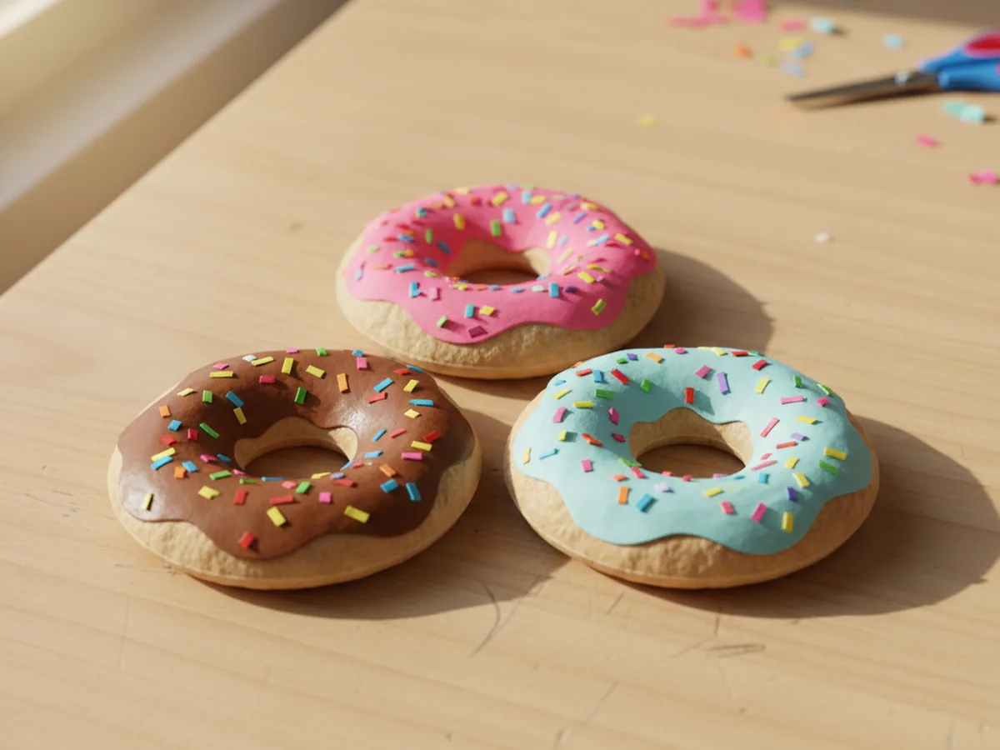
8. Paper Hot Dog
Cut a long oval bun shape from tan paper and tuck in a brown paper sausage along the middle so it peeks out at both ends. Squeeze on a wavy yellow paper mustard line and a wavy red paper ketchup line. Older kids love the squiggly condiment shapes because they get to be a little messy and free with the cuts. This food craft with paper always gets giggles when it sits on a paper plate next to a paper hamburger.
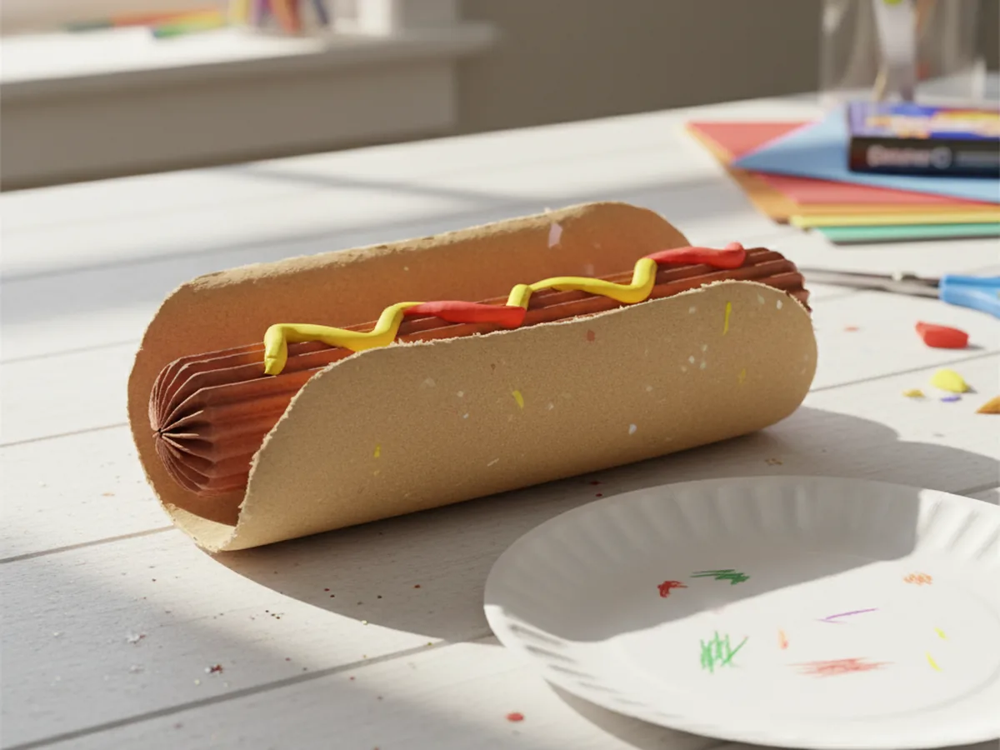
9. Paper Banana
Cut a long curved banana shape from yellow paper and add small brown tips at each end for the stem and the blossom point. Use a marker to draw two faint vertical lines down the side for the banana ridges and add tiny brown specks for a perfectly ripe look. Bananas are quick wins among paper food crafts because the shape is forgiving and the color reads instantly. Great for filling a paper fruit bowl in a pretend kitchen.
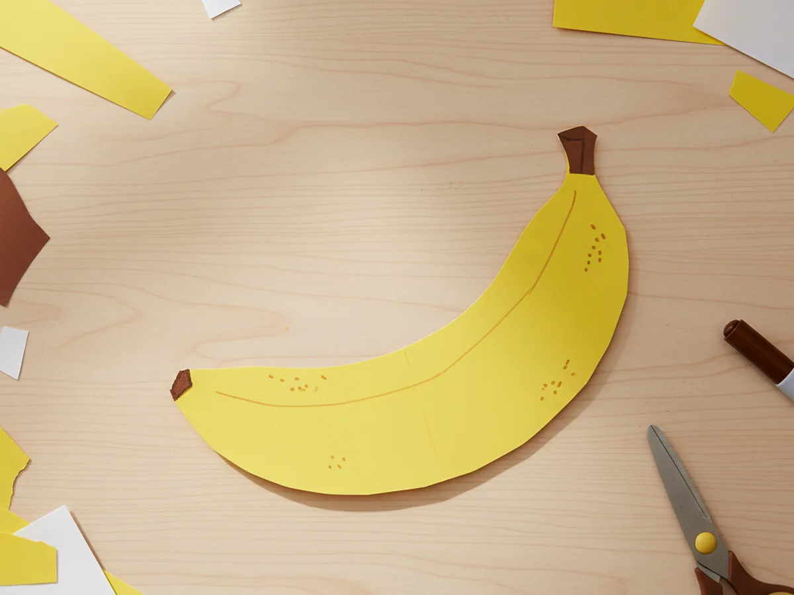
10. Paper Strawberry
Cut a heart shape from red paper and trim the bottom to a soft point for the classic strawberry silhouette. Add a small green leafy crown at the top and use a black marker to dot tiny seed marks evenly across the red surface. The result is bright, recognizable, and toddler-friendly. Strawberries are one of the cutest food crafts with paper for a spring or summer crafting afternoon, especially when paired with paper banana slices in a pretend fruit salad.
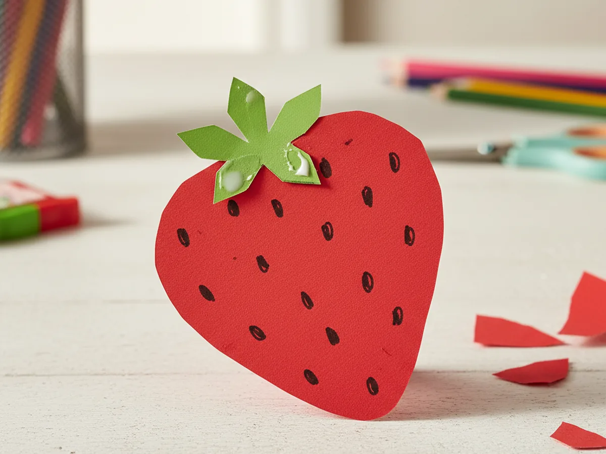
11. Paper Watermelon Slice
Cut a half-circle from green paper, layer a slightly smaller half-circle of white paper on top, and finish with an even smaller pink half-circle for the juicy fruit. Use a black marker to add seed shapes or glue on tiny black paper teardrops. The bright pink and green combo always reads as summer, and these slices look adorable strung together as a paper watermelon garland on a sunny window.
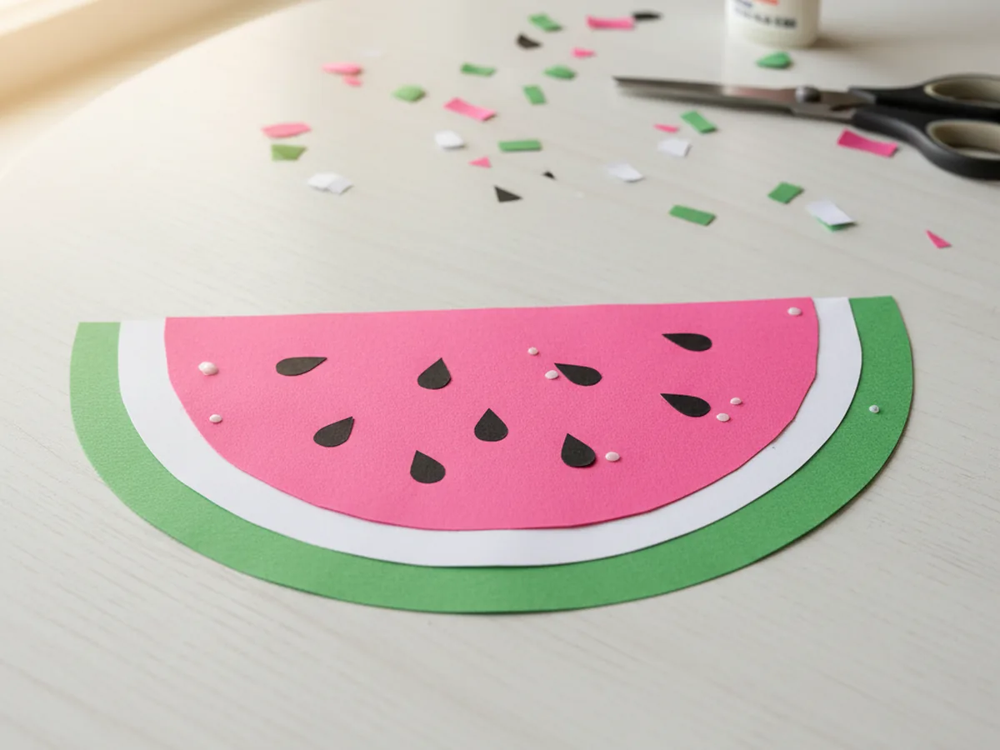
12. Paper Birthday Cake
Stack two or three cardstock rectangles in different pastel shades to build the cake layers, then add a swirl of frosting on the top using a wavy white paper strip. Glue thin paper candle shapes standing up on top with a tiny yellow flame on each. Decorate the sides with paper drips, sprinkles, or polka dots. Paper birthday cakes are one of those food crafts with paper that almost always gets requested again the very same day.
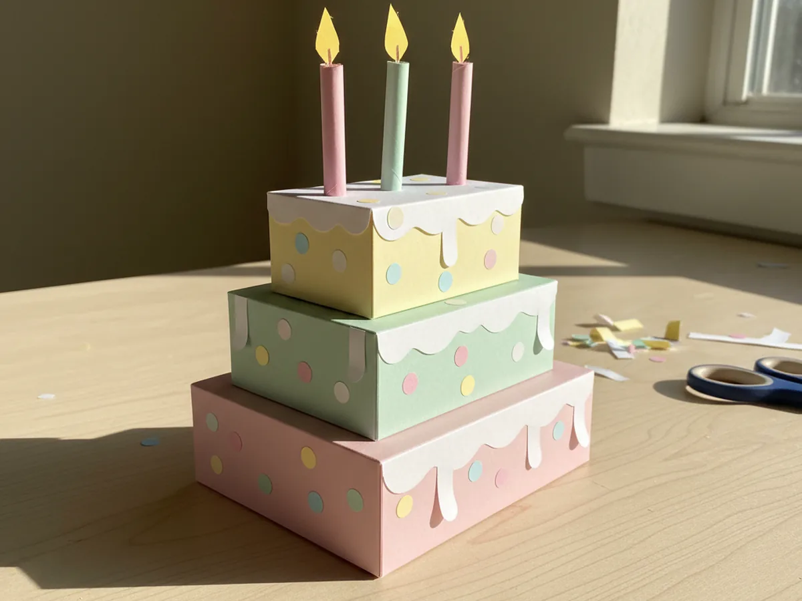
13. Paper Sandwich
Cut two square slices of bread from tan paper, then layer in a yellow square of cheese, a small ruffled green lettuce shape, and a red tomato slice or two. Cut the finished sandwich in half on the diagonal so you can see all the colorful layers from the side. Older kids enjoy planning their own paper sandwich fillings, swapping in paper ham slices, paper pickles, or paper egg slices. A simple, satisfying paper food craft for any age.
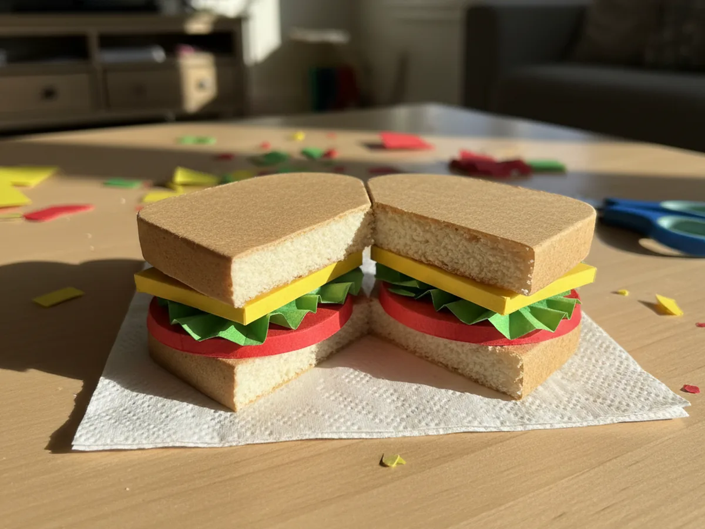
14. Paper Carrot
Roll a cone of orange paper to form the carrot body and tuck in a few thin green paper strips at the top to look like leafy carrot greens. Use a marker to draw small horizontal lines along the body for the carrot ridges. This paper food craft works wonderfully for an Easter table, a vegetable garden scene, or a pretend market stand for kids. Toddlers love how easy it is to hold and stack the finished carrots.
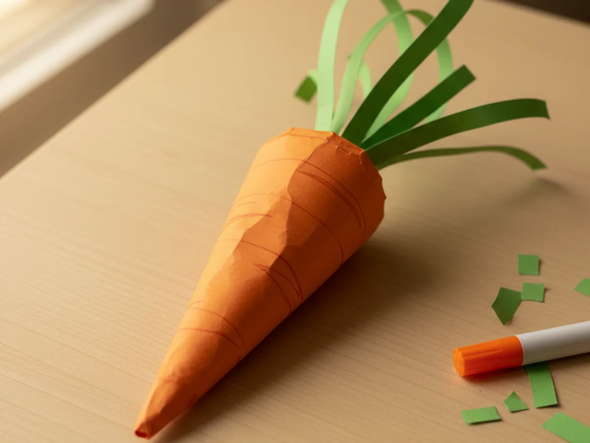
15. Paper Popcorn Bucket
Decorate a small paper cup or a folded red and white striped paper cone, then fill it with crinkled little balls of white tissue paper or torn white scraps to look like fluffy popcorn pieces. A few little pops of yellow paper add the buttery touch. The texture and crinkle make this one of the most playful food crafts with paper on the list. Great for a pretend movie night or a paper concession stand setup. 🍿
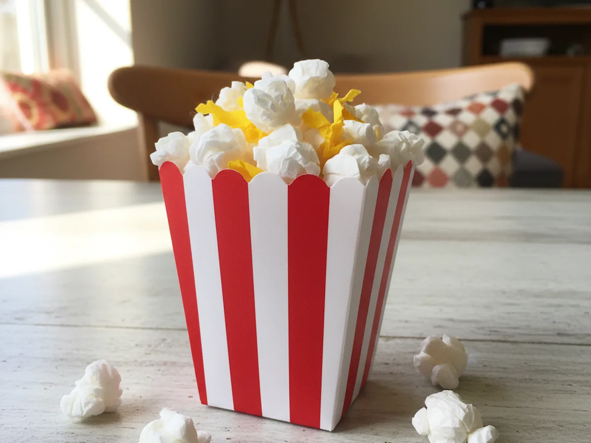
16. Paper Taco
Fold a yellow or tan paper semicircle into a taco shell shape, then tuck in green ruffled lettuce, a red tomato strip, brown ground meat squiggles, and a few yellow cheese sprinkles. The folded shape holds itself together nicely with a dot of glue at the base. Tacos are a satisfying paper food craft because the layered fillings feel like a real little snack. Make a few and serve them on a paper plate for a happy pretend lunch.
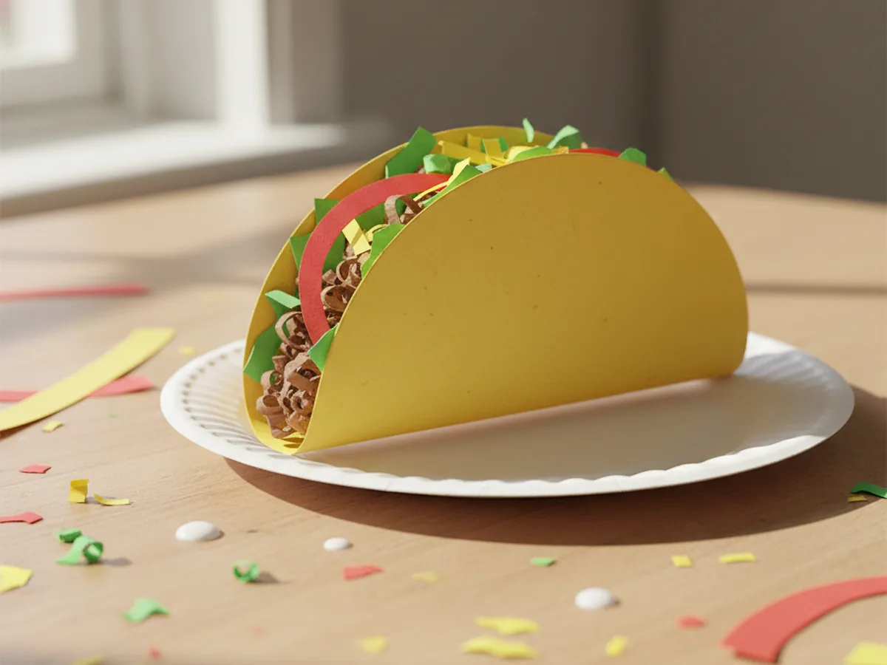
17. Paper Pineapple
Cut a tall oval body from yellow or golden paper and use a black marker to draw a crisscross diamond pattern across the surface for the pineapple texture. Add a spiky green leaf crown made from several pointed strips glued at the top. Pineapples are a wonderfully tropical addition to any spread of food crafts with paper, and the crosshatch pattern is a calming, meditative little drawing exercise for older kids.
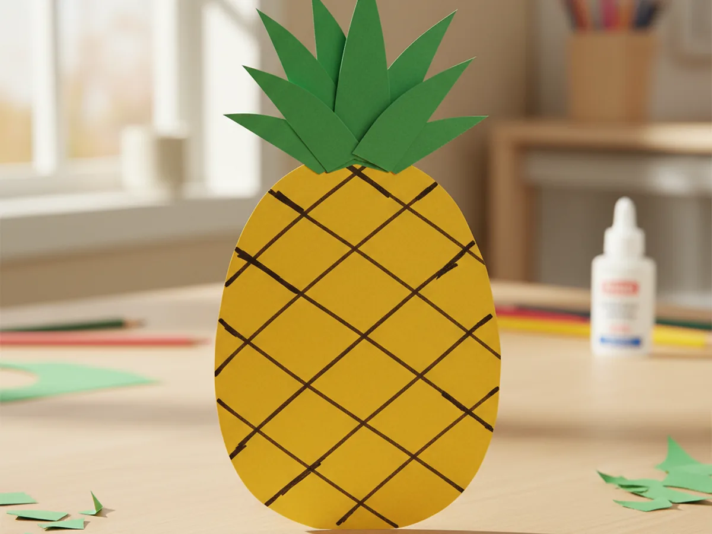
18. Paper Lemon
Cut a small oval lemon shape from bright yellow paper and add a tiny green stem with a single leaf at one end. For a sliced version, cut a yellow circle, layer a smaller white circle inside, and draw thin lines from the center to look like citrus segments. Pair lemons with paper strawberries and paper apples for a charming little fruit basket display. Among quick paper food crafts, the sliced lemon is especially pretty.
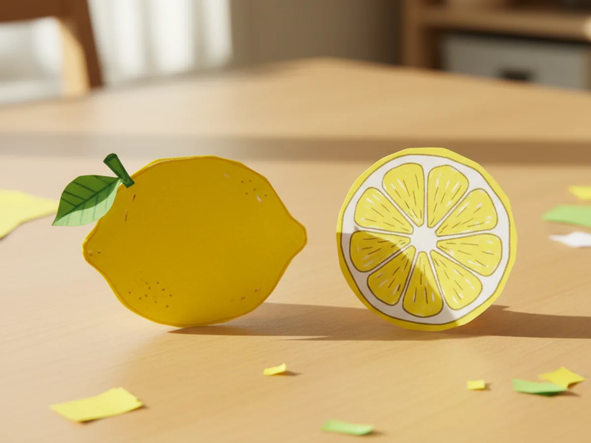
19. Paper French Fries
Cut six or seven long thin rectangles from yellow or pale gold paper for the fries, then slip them into a small red paper pouch folded into a fries cup shape. The fries can poke out at slightly different heights for a charmingly imperfect, just-served look. This is one of the easiest food crafts with paper for a pretend fast food meal, and it pairs beautifully with the paper hamburger and the paper hot dog from earlier in the list.
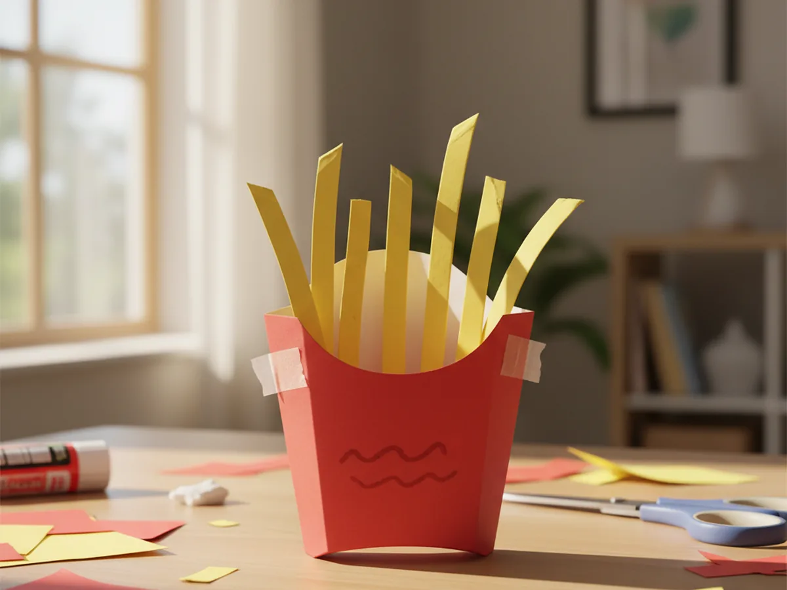
20. Paper Rainbow Lollipop
Cut a circle from white cardstock and glue strips of colorful paper in a swirling spiral from the center outward to create the classic rainbow lollipop pattern. Tape a paper straw or a wooden skewer to the back as the stick. Wrap the whole thing in a square of clear cellophane if you want a finished candy-shop look, but it works beautifully without it too. A sweet way to end a session of paper food crafts on a colorful note.
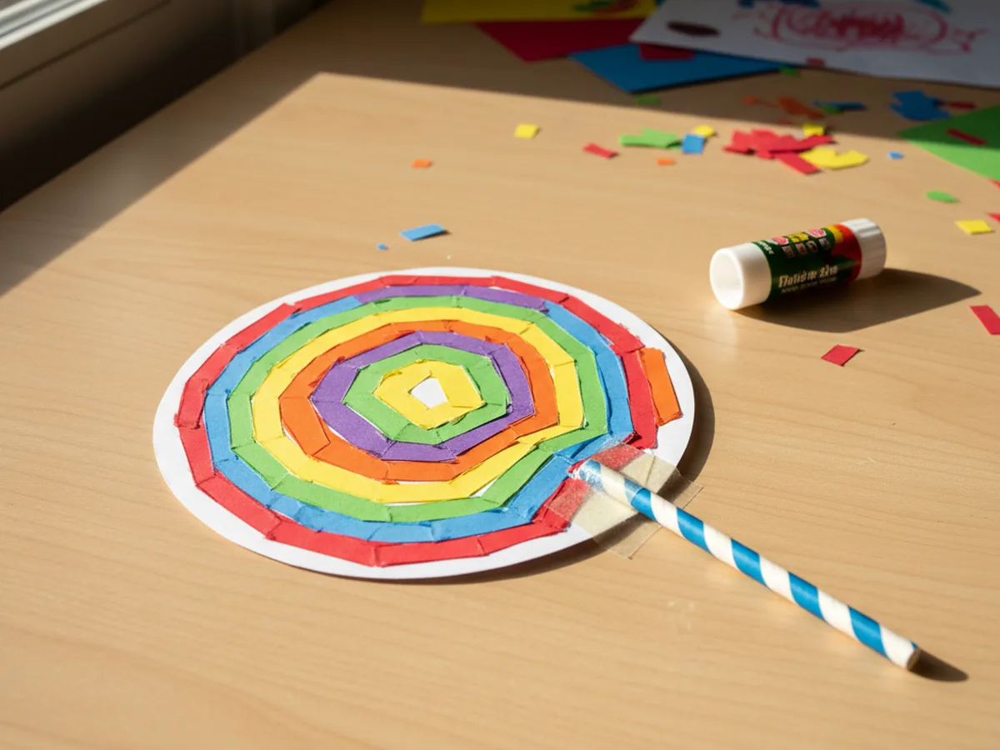
Final Thoughts
The best part of making food crafts with paper is what happens after the crafting ends. Suddenly your child is running a tiny pretend bakery, packing a paper picnic, or serving paper sushi to all their stuffed animals. That kind of imaginative play is where the real magic of these projects lives. 🌈
Pick the one or two ideas that feel right for today, gather your paper, and start small. Even one finished paper donut on the kitchen table can spark a whole afternoon of giggly play together.
More Crafts You'll Love
If your kids enjoyed making pretend food, here are two more paper craft articles full of fun ideas to try together.
Happy crafting with your little chef!